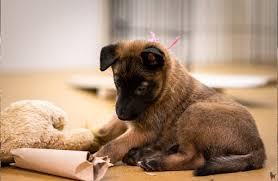
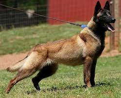
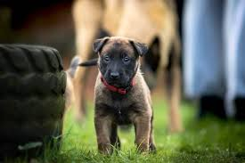

Basic information
The Belgian Shepherd (also known as the Belgian Sheepdog, and including the Belgian Malinois or the Chien de Berger Belge) is a breed of medium-sized herding dog from Belgium. While predominantly considered a single breed, it is bred in four distinct varieties based on coat type and colour; the long-haired black Groenendael, the rough-haired fawn Laekenois, the short-haired fawn Malinois, and the long-haired fawn Tervuren. In the United States, the American Kennel Club considers the four varieties to be separate breeds.



Home page
Temperament
Learning page